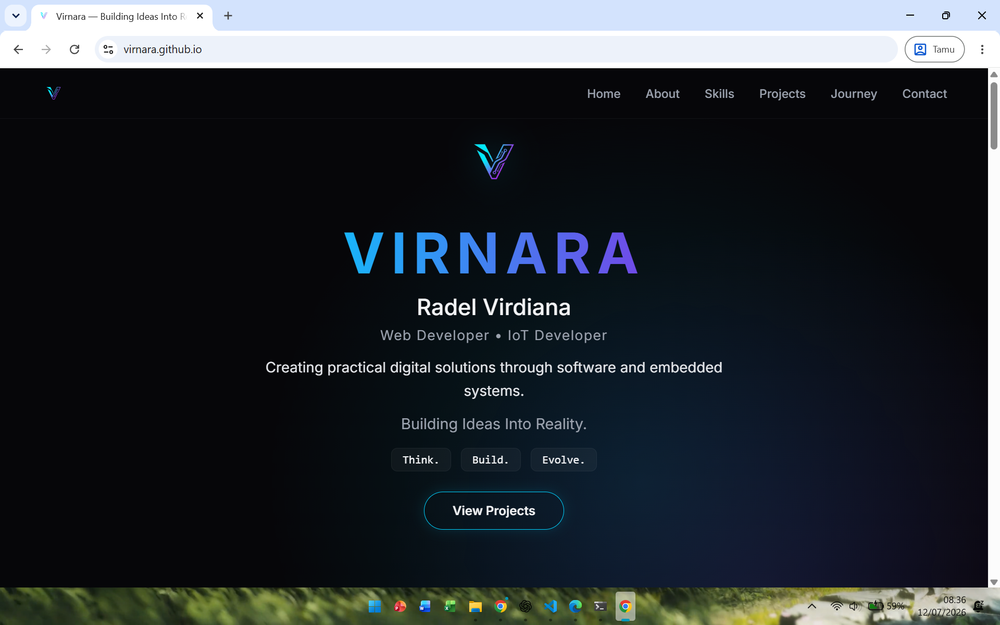

VIRNARA
Radel Virdiana
Web Developer • IoT Developer
Creating practical digital solutions through software and embedded systems.
Building Ideas Into Reality.
Think. Build. Evolve.👤 About Me
Saya percaya bahwa teknologi bukan hanya tentang menulis kode, tetapi tentang menciptakan solusi yang memberikan manfaat nyata. Karena itu saya terus belajar dan membangun proyek di bidang Web Development dan Internet of Things (IoT). Menggabungkan logika rekayasa dengan pendekatan taktis untuk mewujudkan sistem yang fungsional, efisien, dan mudah digunakan.
🛠️ Skills
🚀 Featured Projects
✨ Personal Projects

Virnara Portfolio
🟡 In ProgressPersonal branding website dan markas utama brand Virnara. Dibangun menggunakan Vanilla HTML, CSS, dan JavaScript dengan fokus pada arsitektur semantik, UI modern, dan performa tinggi.
View Repository →Smart Air Monitoring
🔵 LearningSistem pemantauan kualitas udara secara real-time berbasis Internet of Things. Menggunakan sensor MQ135 untuk mendeteksi polutan yang terintegrasi langsung dengan dashboard pemantauan.
View Repository →Docker Learning Lab
🔵 LearningLingkungan laboratorium virtual dan simulasi untuk mempelajari manajemen kontainerisasi, orkestrasi basic, isolasi environment aplikasi, dan deployment taktis berbasis Linux.
View Repository →Web Development Playground
🟢 CompletedKumpulan eksplorasi, tugas akademik, dan eksperimen aplikasi web berbasis arsitektur monolith tradisional untuk memperkuat pemahaman fundamental backend dan database integration.
Explore Playground →🤝 Collaborative Projects
IoT Attendance System
🤝 ContributorBerkontribusi aktif dalam pengembangan, perakitan, dan pengujian sistem absensi pintar berbasis mikrokontroler. Bertanggung jawab pada implementasi komponen hardware dan debugging integrasi sensor.
Development & Testing Support⏳ My Journey
Belajar Dasar HTML, CSS, dan JavaScript
Memulai langkah awal di dunia rekayasa perangkat lunak dengan mendalami pilar utama web fundamental, logika pemrograman dasar, dan manipulasi DOM.
Mengembangkan Aplikasi PHP & MySQL dan Penggunaan Git
Mulai membangun aplikasi dinamis berbasis server-side, manajemen database relasional, serta menerapkan sistem kontrol versi (version control) menggunakan Git & GitHub.
Membangun Proyek IoT dengan ESP32, Belajar Docker, dan Brand Virnara
Mengintegrasikan perangkat lunak dengan sistem tertanam (embedded systems), mengeksplorasi kontainerisasi Docker, dan menyatukan seluruh identitas ke dalam brand Virnara.